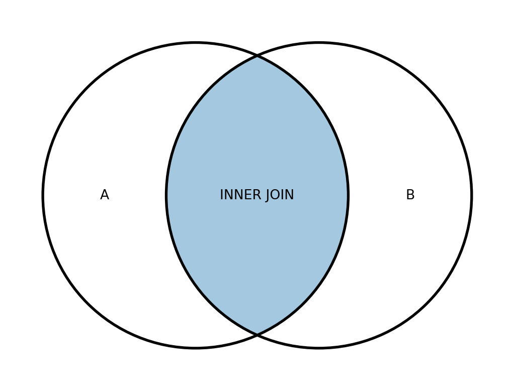

7 Об’єднання таблиць
7.1 Основні типи об’єднань JOIN
Ось ми й підібралися до однієї з найважливіших тем у SQL – об’єднання таблиць.
SQL-запити дозволяють вибирати та обробляти дані не тільки з однієї таблиці – у цьому ми вже переконалися, коли працювали з підзапитами. Але таблиці можна об’єднувати в один результуючий набір записів, пов’язуючи їх за певними умовами. Це дозволяє робити операція з’єднання JOIN.
Ми розглянемо такі типи з’єднань таблиць:
INNER JOINLEFT/RIGHT JOINFULL JOINCROSS JOIN
Оператори об’єднання включаються до розділу FROM запиту. Загалом, незалежно від того, який тип об’єднання використовується, запит на об’єднання таблиць виглядає наступним чином:
Як правило (але далеко не завжди), в якості умови [condition], за якою відбувається об’єднання, виступає рівність значень у певних стовпцях. Такі стовпці зазвичай використовуються як ключі із зазначенням id (товару, користувача тощо), тобто значень, за якими можна однозначно ідентифікувати певну сутність:
При цьому рекомендується до кожної колонка через точку вказувати ім’я таблиці, яка містить цю колонку. Більше того, це стає вже не рекомендацією, а необхідністю, коли імена стовпців у таблицях збігаються - без явного вказівки джерел, база даних не зможе сама визначити, які стовпці та з яких таблиць ви маєте на увазі, і в результаті поверне помилку.
Якщо імена таблиць надто довгі, таблицям можна присвоїти аліаси. За цими ж аліасами можна відразу зручно звертатися до колонок:
Якщо ім’я поля, за котрим відбувається об’єднання, збігається в обох таблицях (як у прикладах вище), можна використовувати скорочений запис з оператором USING:
При об’єднанні таблиць можна використовувати підзапити. Їх можна поєднувати з іншими таблицями або одину з одною:
7.2 Як працює об’єднання таблиць
Добре, із записом у загальному вигляді начебто зрозуміло. Але що насправді відбувається при об’єднанні таблиць? Давайте розбиратися.
Процес об’єднання можна подати у вигляді наступної послідовності операцій:
- Спочатку кожен рядок першої таблиці зіставляється з кожним рядком другої таблиці, тобто відбувається декартів добуток вдох множин, результатом якого є нове множина, що складається з різних пар вхідних рядків. Наприклад, якщо у одній таблиці було 50 записів, а інший 10, то результаті декартового добутку вийде 500 записів. На іграшковому прикладі це можна уявити так:

Потім для кожного об’єднаного рядка, що складається з двох вхідних таблиць, перевіряється умова з’єднання, вказана після оператора
ON.Після цього відповідно до обраного типу об’єднання формується результуюча таблиця.
При з’єднанні yне двох, а кількох таблиць, операція об’єднання виконується послідовно кілька разів, тобто описаний вище алгоритм запускається стільки разів, скільки зазначено з’єднань. При цьому в цій послідовності при кожному об’єднанні можна використовувати будь-який тип з’єднання (INNER, LEFT тощо).
Для двох об’єднань запит може виглядати приблизно так:
SELECT a.column_1, b.column_2
FROM table_1 a
LEFT JOIN table_2 b
ON a.user_id = b.user_id
JOIN table_3 c
ON b.order_id = c.order_id
...Про те, як саме вибір типу JOIN впливає на результат, ми говоритимемо далі.
Якщо щось на цьому кроці залишилося незрозумілим, не переживайте. Далі все прояснимо на практичних прикладах!
7.3 INNER JOIN
Перший тип об’єднання, який ми розглянемо, має назву INNER JOIN. Це оператор внутрішнього об’єднання, якому абсолютно неважливий порядок зазначення таблиць, тобто у таких випадках результат об’єднання буде однаковим:
SELECT ...
FROM table_1 INNER JOIN table_2
ON [condition]
...
SELECT ...
FROM table_2 INNER JOIN table_1
ON [condition]
...При цьому в запиті замість INNER JOIN можна писати просто JOIN - це те саме.
Результат об’єднання INNER JOIN формується так:
- Спочатку кожен рядок першої таблиці зіставляється з кожним рядком другої таблиці (відбувається декартів добуток).
- Потім для кожного об’єднаного рядка перевіряється умова з’єднання, вказана після оператора
ON. - Після цього всі об’єднані рядки, для яких умова виявилася істинною, додаються до результуючої таблиці.
Таким чином, в результаті об’єднання INNER JOIN із двох таблиць відкидаються усі рядки, які не пройшли перевірку на відповідність зазначеній умові. От і все!
Розглянемо наступний приклад:
SELECT A.id as id,
A.city as city,
B.country as country
FROM table_A as A
JOIN table_B as B
ON A.id = B.idВ результаті такого запиту таблиці table_A та table_B будуть об’єднані в таблицю table_С:
Таблиця 7.1: Приклад роботи INNER JOIN
| id | city |
|---|---|
| 01 | London |
| 02 | Kyiv |
| id | country |
|---|---|
| 02 | Ukraine |
| 03 | Poland |
| id | city | country |
|---|---|---|
| 02 | Kyiv | Ukraine |
Оскільки таблиці збігаються лише за одним значенням у стовпці id, то в результат буде включено лише одне запис.
Схематично результат роботи об’єднань прийнято зображувати за допомогою діаграм Венна. Для INNER JOIN діаграма виглядає так:
Примітка
Докладніше про INNER JOIN можна почитати тут.
А тепер давайте повернемося до нашої бази даних та вирішимо завдання.
Для початку спробуйте виконати наступні два запити та порахувати кількість унікальних користувачів у таблицях users та user_actions:
Ви помітите, що у таблиці user_actions унікальних користувачів більше. Це означає, що про частину користувачів ми щось не знаємо — у нас просто немає інформації в таблиці users. Тому в результаті об’єднання цих двох таблиць за допомогою INNER JOIN цю частину користувачів буде виключено з результату.
Примітка
Зверніть увагу, що в результаті об’єднання колонки з ключами (у нашому випадку це user_id) не перетворюються на одну загальну колонку, а разом додаються в результуючу таблицю. Тобто скільки було сумарно колонок у двох таблицях, стільки виявиться і в результуючій таблиці після об’єднання. А вже далі в операторі SELECT можна вибирати потрібні та проводити над ними операції.
Щоб звернутися до колонок з однаковим ім’ям (user_id), що прийшли з різних таблиць, призначте таблицям аліаси та зверніться до колонок через них. Приклад, як це можна зробити:
Рішення
| user_id_left | user_id_right | order_id | time | action | sex | birth_date | |
|---|---|---|---|---|---|---|---|
| 0 | 1 | 1 | 1 | 2022-08-24 01:52:00 | create_order | female | 1991-10-23 |
| 1 | 1 | 1 | 4683 | 2022-08-27 20:56:00 | create_order | female | 1991-10-23 |
| 2 | 1 | 1 | 22901 | 2022-09-02 00:58:00 | create_order | female | 1991-10-23 |
| 3 | 1 | 1 | 23149 | 2022-09-02 02:36:00 | create_order | female | 1991-10-23 |
| 4 | 2 | 2 | 2 | 2022-08-24 06:37:00 | create_order | female | 1993-06-18 |
| ... | ... | ... | ... | ... | ... | ... | ... |
| 59341 | 21399 | 21399 | 59583 | 2022-09-08 23:56:00 | create_order | female | 1987-04-27 |
| 59342 | 21399 | 21399 | 59587 | 2022-09-08 23:58:00 | create_order | female | 1987-04-27 |
| 59343 | 21400 | 21400 | 59586 | 2022-09-08 23:57:00 | create_order | male | 1986-12-31 |
| 59344 | 21401 | 21401 | 59589 | 2022-09-08 23:58:00 | create_order | female | 1993-03-20 |
| 59345 | 21402 | 21402 | 59591 | 2022-09-08 23:58:00 | create_order | female | 1991-05-24 |
59346 rows × 7 columns